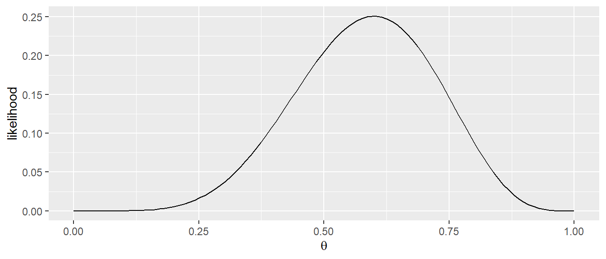
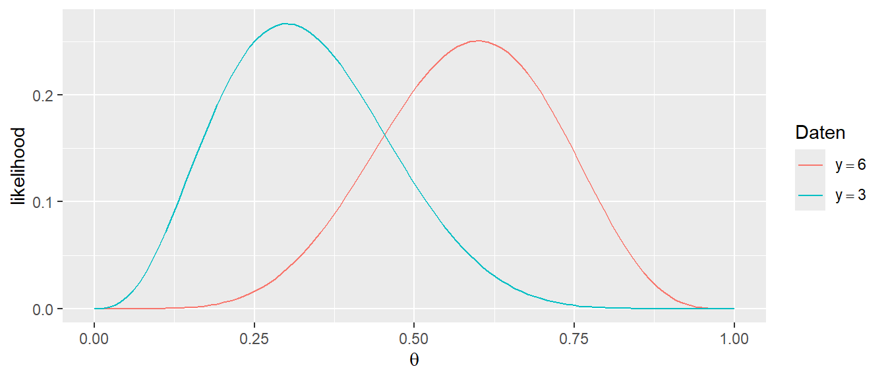
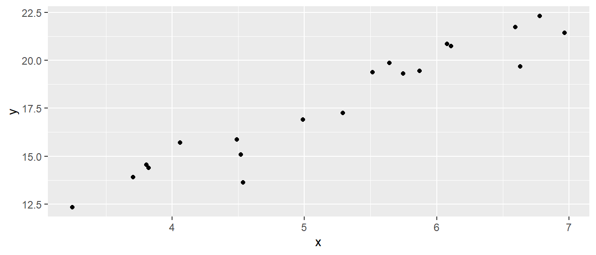

17 Maximum-Likelihood (MLE)
Bei der Herleitung der Gerade bei der einfachen linearen Regression wurde zunächst ein Kriterium angesetzt, die Minimierung der quadrierten Abweichungen der beobachteten Punkte \(Y_i\) von den auf der Gerade liegenden vorhergesagten Punkten \(\hat{Y}_i\), den Residuen. Bei diesem Ansatz sind zunächst keine statistischen Überlegungen notwendig gewesen. Anschließend im Rahmen der Inferenz zu den Modellparametern \(\beta_0\) und \(\beta_1\) wurde dann die Modellannahme der Normalverteilung der Residuen \(\epsilon_i \sim \mathbf{N}(0,\sigma^2)\) dazugenommen um eine statistische Analyse der Modellkoeffizienten und der statistischer Signifikanz bzw. Hypothesentestung einzuführen. Im folgenden wird eine alternative Herleitung entwickelt über die Maximum-Likelihood Methode. Diese Herleitung bildet dabei ein grundlegendes Verfahren, dass im Fall der linearen Regression zu den gleichen Ergebnissen kommt, aber einen allgemeineren Ansatz darstellt der dann auch im späteren Verlauf die Betrachtung von Modellen erlaubt die mit dem RMS Ansatz nicht möglich sind.
Tipp
Um den folgenden Inhalten einfacher folgen zu können, kann es sinnvoll sein, sich noch einmal kurz die Inhalte aus Anhang A aus den Abschnitten Logarithmus, Ableitungen und Extremwerte zu vergegenwärtigen.
17.1 Likelihood
Im ersten Schritt muss zunächst der Begriff des Likelihood erarbeitet werden. Die Likelihood ist eng mit dem Konzept der Dicht- bzw. Wahrscheinlichkeitfunktion verbunden. Sei zum Beispiel nochmal das Beispiel des n-fachen MÜnzwurfes betrachtet, welches mit Hilfe der Binomialverteilung (siehe Gleichung 11.4) beschrieben werden kann.
\[ \text{Binom}(Y, N, p) = P(Y = y \mid N, p) = \binom{N}{y}p^y (1-p)^{N-y} = \binom{N}{y}p^y q^{N-y} \]
Hier ist \(Y\) die Anzahl der Köpfe, \(N\) die Anzahl der Würfe und \(p\) die Wahrscheinlichkeit bei einem Wurf Kopf zu beobachten. In Abbildung 17.1 ist die Binomialverteilung für den Fall \(N = 10, p = 0.05\) dargestellt.
Nun kann die Schreibweise \(\text{Binom}(Y,N,p)\) etwas umgeändert werden, wenn für der Parameter \(p\) durch \(\theta\) ersetzt werden. Dies hat inhaltlich keine Folgen sondern ist lediglich eine Änderung der Schreibweise. Es folgt \(\text{Binom}(Y,N,p)=\text{Binom}(Y,N,\theta)\). Seien nun die Daten \(y\) beobachtet worden. D.h. es wurde ein Münzexperiment, z.B. \(N = 10\)-mal durchgeführt worden und es wurde sechsmal Kopf beobachtet worden, d.h. \(y = 6\). Der unbekannte Parameter in \(\text{Binom}\) ist nun lediglich \(\theta\), da \(\text{Binom}(6, 10, \theta)\) gilt. Wird zunächst die Reihenfolge der Parameter nach \(\text{Binom}(\theta, 6, 10)\) geändert, kann dieser Ausdruck als Funktion von \(\theta\) interpretiert werden. Wenn nun noch die Werte \(y = 6\) und \(N = 10\) als gegeben interpretiert werden, dann wird eine Funktion \(\text{Binom}(\theta)\) erhalten. D.h. in Verbindung mit einem beobachteten Datensatz, durch den zwei der drei Parameter von \(\text{Binom}\) definiert werden, wird eine neue Funktion erhalten, welche nur noch einen Parameter \(\theta\) besitzt. Dieser Parameter war ursprüngliche das \(p\), die Wahrscheinlichkeit Kopf bei einem Wurf zu beobachten, wird nun aber mit dem Symbol \(\theta\) bezeichnet. Diese Umbenennung erscheint zunächst als überflüssige Arbeit, hilft im weiteren Verlauf, da beispielsweise in der Literatur die Konvention herrscht den freien Parameter der Likelihood-Funktion mit dem Symbol \(\theta\) zu bezeichnen. Wird nun noch eine weitere Umbenennung vorgenommen, und \(\text{Binom}\) durch das Symbol \(\mathcal{L}\) ersetzt, wird aus \(\text{Binom}(\theta) \equiv \mathcal{L}(\theta)\). Das stylisierte L in \(\mathcal{L}\) steht dann, entsprechend für Likelihood.
Die Likelihood-Funktion \(\mathcal{L}(\theta)\) kann nun entsprechend für verschiedene Wert von \(\theta\), im vorliegenden Fall \(p\) Kopf, abgetragen werden, wenn die beobachteten Daten \(X\) als gegeben angesehen werden. In Abbildung 17.2 ist die Likelihood-Funktion nun für Werte zwischen \(0\) und \(1\) für \(\theta\) abgetragen.

Zunächst fällt auf, dass im Unterschied zu Abbildung 17.1 der Graph in diesem Fall kontinuierlich ist. Die Wahrscheinlichkeitsfunktion der Binomialverteilung ist diskrete, da Wahrscheinlichkeiten für eine endliche Anzahl von Ausgängen (=Anzahl der Köpfe) berechnet werden. Im Gegensatz dazu, ist der Likelihood-Graph kontinuierlich, da er eine Funktion von \(\theta\) ist und in diesem Fall \(\theta\) alle Werte in \([0,1]\) annehmen kann.
Der Likelihood-Graph ändert sich nun entsprechend, wenn ein anderes Ergebnis beobachtet wird. Seien zum Beispiel bei \(N = 10\) Würfen nur drei Köpfe (\(y = 3\)) beobachte worden ergibt sich der folgende Graph:

In Abbildung 17.3 ist zu sehen, dass sich die Form der Likelihood-Funktion \(\mathcal{L}(\theta)\) verändert hat. D.h. die Ausprägung des Likelihood-Graphen ist immer von den als gegeben angenommen Daten \(Y\) abhängig. Die zentrale Einsicht ist aber immernoch, dass die ursprüngliche Dichte- bzw. Wahrscheinlichkeitsfunktion als eine Funktion eines Modellparameters interpretiert werden, während die beobachteten Daten als fixiert angesehen werden. Insgesamt kann nun eine Definition für die Likelihood gegeben werden.
Definition 17.1 (Likelihood ) Seien \(X\) die beobachtete Daten und \(\theta\) ein unbekannter Parameter eines statistischen Modells. Die Likelihood-Funktion \(\mathcal{L}(\theta)\) ist die Wahrscheinlichkeit (bzw. Dichte) der beobachteten Daten, aufgefasst als Funktion des Parameters \(\theta\):
\[\begin{align*} \mathcal{L}(\theta) &= P(\theta \mid X = x) \quad \text{diskrete Verteilung} \\ \mathcal{L}(\theta) &= f_X(\theta \mid X = x) \quad \text{kontinuierliche Verteilung} \end{align*}\]
Die Daten \(X\) werden als fixiert betrachtet, während der Parameter \(\theta\) variiert. Die Likelihood \(\mathcal{L}\) misst, wie plausibel verschiedene Parameterwerte \(\theta\), für die gegeben Daten \(X\), sind.
Eine wichtige Eigenschaft der Likelihood ist, dass es sich nicht um Wahrscheinlichkeitsverteilung handelt. Das Integral \(\int \mathcal{L}(\theta)d\theta\) ist nicht \(1\) wie es für eine Dichtefunktion notwendig wäre.
Nun stellt sich daher die Frage wofür die Likelihood-Funktion \(\mathcal{L}(\theta)\) überhaupt nützlich ist. Die Antwort ist, dass sich mit Hilfe der Likelihood-Funktion Vergleiche anstellen lassen, wie plausibel verschiedene Wert für \(\theta\) unter den beobachteten Daten sind. \(\mathcal{L}(\theta)\) ermöglicht es, denjenigen Parameterwert zu bestimmen, für den die Wahrscheinlichkeit der beobachteten Daten maximal wird. In Abbildung 17.1 zeigt \(\mathcal{L}(\theta)\) ein Maximum für \(p \equiv \theta = 0.6\). Dagegen ist im zweiten Beispiel in Abbildung 17.2 das Maximum bei \(\theta = 0.3\). Das Maximum von \(\mathcal{L}(\theta)\) kann nun als derjenige Wert von \(\theta\) interpretiert werden, der unter den beobachteten Daten als plausibelsten erscheint. D.h. die Frage nach dem Besten Modellparameterwert, wird nun eine Optimierungsaufgabe für die Likelihood-Funktion \(\mathcal{L}(\theta)\). Die Likelihood-Funktion wird verwendet um einen Schätzer für den Modellparameter \(\theta\) zu erhalten. Unter dieser Betrachungsweise wird damit auch das Konzept des Maximum Likelihood-Schätzers einsehbar.
Definition 17.2 (Maximum-Likelihood ) Seien \(x\) die beobachteten Daten und \(\theta\) ein unbekannter Parameter eines statistischen Modells mit Likelihood-Funktion \(\mathcal{L}(\theta)\). Der Maximum-Likelihood-Schätzer (ML-Schätzer) ist derjenige Parameterwert \(\hat{\theta}\), der die Likelihood maximiert:
\[ \hat{\theta} = \arg\max_{\theta} \mathcal{L}(\theta). \]
Das heißt: Der Maximum-Likelihood-Schätzer ist der Parameterwert, unter dem die beobachteten Daten am wahrscheinlichsten sind.
Sei nun wieder das Beispiel der Binomialverteilung gegeben und es wurden bei \(N = 10\) insgesamt sechsmal Kopf (\(y = 6\)) beobachtet. Angewendet auf Gleichung 11.4 ergibt sich somit.
\[ \mathcal{L}(\theta) = \binom{10}{6}\theta^6 (1-\theta)^{10-6} = \binom{10}{6}\theta^6(1-\theta)^4 \]
Für diese Funktion soll nun das Maximum bestimmt werden. Allerdings ist das direkte Maximieren der Likelihood-Funktion rechnerisch oft aufwendig. Um sich dies zu vereinfachen wird ein mathematischer Trick angewendet. Es ist möglich unter bestimmten Voraussetzungen, die die Logarithmusfunktion erfüllt (siehe Anhang A), das Maximum einer Funktion \(f(x)\) bzw. im vorliegenden Fall \(\mathcal{L}(\theta)\) zu bestimmen nachdem die Logarithmusfunktion \(log(x)\) auf \(f(x)\) angewendet wurde. D.h. es wird eine neue Funktion \(log(f(x))\) verwendet. Dies wird gemacht, da der Logarithmus, nach den Rechenregeln \(\log(a\cdot b) = \log(a) + \log(b)\) aus der Multiplikation eine Addition macht. Angewendet auf die Likelihood-Funktion resultiert daraus der Loglikelihood \(\ell(\theta) = \log \mathcal{L}(\theta)\).
Angewendet auf den vorliegenden Fall führt dieser Ansatz zu unter Beachtung einer weiteren Rechenregel für den Logarithmus \(\log(a^b) = b\log(a)\):
\[\begin{align*} \ell(\theta) &= \log \mathcal{L}(\theta) \\ &= \log\left(\binom{10}{6}\cdot \theta^6 \cdot (1-\theta)^{4}\right) \\ &= \log\left(\binom{10}{6}\right) + \log\left(\theta^6\right) + \log\left((1-\theta)^{4}\right) \\ &= \log \binom{10}{6} + 6 \log(\theta) + 4\log(1-p) \end{align*}\]
Um nun das Maximum dieser Funktion zu bestimmen, muss die Ableitung berechnet werden und gleich Null gesetzt werden. Bei der Berechnung der Ableitung kann der erste Term direkt gestrichen werden, da es sich um eine Konstante handelt, deren Ableitung gleich Null ist. Dadurch erhält man die Gleichung unter Beachtung das \(\frac{d \log(x)}{dx} = \frac{1}{x}\) und der Kettenregel (siehe Anhang A):
\[ \frac{d \ell{\theta}}{d\theta} = \frac{6}{\theta} - \frac{4}{1-p} = 0. \]
Durch Umformen folgt daraus:
\[ \hat{\theta} = \frac{6}{10}. \]
Dieses Ergebnis sollte intuitiv auch nachvollziehbar sein, wenn bei \(N = 10\) Münzwürfen sechsmal Kopf beobachtet wurde, dann ist der beste Schätzer wohl \(\hat{p} = \hat{\theta} = \frac{y}{N}\). Der Maximum-Likelihood-Schätzer für die Erfolgswahrscheinlichkeit \(p\) ist also der Anteil der beobachteten Erfolge an der Gesamtzahl der Versuche und entspricht genau der relativen Häufigkeit der Erfolge. Die Maximum-Likelihood-Methode liefert in diesem Fall also ein Ergebnis, das sehr gut mit unserer intuitiven Vorstellung übereinstimmt.
Im Zuge der theoretischen Verteilungen wird die Dichtefunktion betrachtet. Für eine gegebene Zufallsvariable kann die Dichte für einen gegebenen Wert, z.B. \(y_i\), über die Dichtefunktion berechnet werden. Wenn eine Zufallsvariable \(X\) einer Normalverteilung folgt, wird die Verteilung von \(X\) mittels der bekannten Dichtefunktion der Normalverteilung beschrieben:
\[\begin{equation*} f(X|\mu,\sigma^2) = \frac{1}{\sqrt{2 \pi \sigma^2}} \exp\left(-\frac{1}{2}\frac{(X - \mu)^2}{\sigma^2}\right) \end{equation*}\]
Hier wird die Dichte von \(X\) als eine Funktion von \(\mu\) und \(\sigma^2\) aufgefasst. Das bedeutet, die Werte für \(\mu\) und \(\sigma\) müssen vorgegeben sein, da diese benötigt werden, um die Dichte zu berechnen.
Für die Likelihood erfolgt nun wieder der Perspektivwechsel. Die Zufallsvariable \(X\) wird als gegeben angesehen und die Dichte für verschiedene Werte von \(\mu\) und \(\sigma^2\) abzutragen. Der Einfachheit halber wird angenommen, dass \(\sigma^2\) ebenfalls bekannt und konstant ist. Die Problemstellung ist nun, analog zu dem Binomialbeispiel, einen Wert für \(\mu\) zu ermitteln der am plausibelsten ist. Dazu können nun wieder verschiedene Dichtewerte für ein gegebenes \(x\) in Abhängigkeit von \(\mu\) darstellen, also die Likelihood.
\[ \mathcal{L}(\mu) = f(\mu|x,\sigma^2) = \frac{1}{\sqrt{2 \pi \sigma^2}} \exp\left(-\frac{1}{2}\frac{(X - \mu)^2}{\sigma^2}\right) \]
Das Maximum dieser Funktion stellt dementsprechend wieder den Maximumlikelihood-Wert dar und ist derjenige Wert der am plausibelsten ist.
Sei der Wert \(x = 3\) beobachtet, und es ist bekannt, dass \(\sigma = 1\) ist. Natürlich reicht ein einzelner Wert nicht aus, um definitive Aussagen zu treffen, aber das Prinzip soll verdeutlicht werden. Eine Tabelle wird erstellt, die verschiedene Werte von \(\mu_i = [0,1,2,3,4,5,6]\) enthält und die Likelihood \(\mathcal{L}(\mu) = f(\mu|x=3,\sigma^2=1)\) für jeden dieser Werte berechnet (siehe Tabelle 17.1).
| \(\mu\) | Dichte |
|---|---|
| 0 | 0.004 |
| 1 | 0.054 |
| 2 | 0.242 |
| 3 | 0.399 |
| 4 | 0.242 |
| 5 | 0.054 |
| 6 | 0.004 |
Beim Betrachten der Werte in Tabelle 17.1 zeigt sich, dass der Wert bei \(\mu = 3\) die größte Dichte aufweist. Um dies weiter zu verdeutlichen, wird das Ganze als kontinuierlicher Graph dargestellt (siehe Abbildung 17.4)

In Abbildung 17.4 ist zu erkennen, dass das Maximum der Likelihood-Funktion beim Wert \(\mu = 3\) liegt. Die Normalverteilung mit \(\mathcal{N}(\mu=3, \sigma=1)\) ist diejenige, die die höchste Dichte produziert und daher auch die höchste Likelihood hat, den beobachteten Wert zu erzeugen. Dies ist intuitiv nachvollziehbar: Wenn ein Wert aus einer Normalverteilung stammt und nur ein einziger Wert vorliegt, macht es Sinn, diejenige Normalverteilung mit dem Mittelwert \(\mu\) zu wählen, die an der Stelle des beobachteten Werts liegt.
Sei diese Beispiel erweitert: Es werden zwei Werte \(x_1 = 1\) und \(x_2 = 2\) beobachtet. Es wird angenommen, dass beide Werte unabhängig voneinander sind und aus der gleichen Normalverteilung stammen. Dadurch das die Wert unabhängig voneinander sind, die Dichten für die beiden Werte miteinander multipliziert werden. Analog wie bei zwei Münzwürfen, die Wahrscheinlichkeit Kopf für beide Münzen zu beobachten ist \(P(KK) = \frac{1}{2}\cdot \frac{1}{2} = \frac{1}{4}\). Die Likelihood-Funktion \(\mathcal{L}\) folgt dementsprechend:
\[\begin{equation*} \mathcal{L} = f(\mu|x_1,\sigma) \cdot f(\mu|x_2,\sigma) \end{equation*}\]
Ein Graph von \(\mathcal{L}\) für verschiedene \(\mu\) bei gegebenem \(\sigma = 1\) hat die folgende Form (Abbildung 17.5).

In ?fig-slm-inf-ml-02 liegt das Maximum von \(L\) bei \(\mu = 1.5\), was dem Mittelwert \(\bar{x} = \frac{1}{2}\sum_{i=1}^2 x_i\) entspricht. Intuitiv ist dies nachvollziehbar: Wenn beiden Werten die gleiche Bedeutung zugemessen wird, liegt die Verteilung, die genau in der Mitte zwischen den beiden Werten liegt, am ehesten mit der Erzeugung der beiden Werte im Einklang.
Die Berechnung führt zum gleichen Ergebnis. Es wird wieder der Loglikelihood \(\log\mathcal{L}\) verwendet und der Konsistenz wegen wird das Symbol \(\mu\) durch das Symbol \(\theta\) ersetzt und \(\sigma^2=1, x_1=1, x_2=2\).
\[ \begin{align*} \log\mathcal{L}(\theta) &= \log\left( \frac{1}{\sqrt{2\pi}}\exp\left(-\frac{1}{2}(1-\theta)^2\right)\frac{1}{\sqrt{2\pi}}\exp\left(-\frac{1}{2}(2-\theta)^2\right)\right) \\ &= \log\left( \left(\frac{1}{\sqrt{2\pi}}\right)^2\exp\left(-\frac{1}{2}(1-\theta)^2\right)\exp\left(-\frac{1}{2}(2-\theta)^2\right)\right) \\ &= \log\left( \left(\frac{1}{\sqrt{2\pi}}\right)^2\exp\left(-\frac{1}{2}(1-\theta)^2 -\frac{1}{2}(2-\theta)^2\right)\right) \\ &= 2 \log\left(\frac{1}{\sqrt{2\pi}}\right) - \frac{1}{2}(1-\theta)^2 -\frac{1}{2}(2-\theta)^2 \end{align*} \]
Dieser Ausdruck wird nun wieder nach \(\frac{d}{d\theta}\) abgeleitet wobei der erste Term verschwindet und es folgt.
\[ \begin{align*} \frac{d}{d\theta}\ell(\theta) &= \frac{d}{d\theta}\left( - \frac{1}{2}(1-\theta)^2 -\frac{1}{2}(2-\theta)^2\right) \\ &= \frac{d}{d\theta}\left( - \frac{1}{2}(1-\theta)^2\right) + \frac{d}{d\theta}\left(-\frac{1}{2}(2-\theta)^2\right) \\ &= -\frac{1}{2}\cdot 2(1-\theta) \cdot(-1) -\frac{1}{2}\cdot 2(2-\theta)\cdot (-1) \\ &= (1-\theta) + (2-\theta) \\ &= 3-2\theta \\ \end{align*} \]
Durch Nullsetzen folgt:
\[ 3-2\theta = 0 \Leftrightarrow \theta = \frac{3}{2} = 1.5 \]
D.h. mit \(\theta = \mu\) wurde über die Maximumlikelihood-Methode der gleiche Wert erhalten, welcher auch intuitive am meisten Sinn macht. Allgemein wird also für die Anwendung der Maximumlikelihood-Methode immer ein theoretisches, statistisches Modell benötigt und es wird der plausibelste Modellparameterwert \(\theta\) anhand des Modells bestimmt. Dieser Wert ist dann der Maximumlikelihood-Schätzer \(\hat{\theta}\).
17.2 Maximum-likelihood Methode bei der einfachen linearen Regression
Dieser Ansatz lässt sich auch auf das Modell der einfachen linearen Regression anwenden. Bei der einfachen linearen Regression wird angenommen, dass die \(Y\)-Werte für jeden \(X\)-Wert einer Normalverteilung mit einer Varianz \(\sigma^2\) folgen. Formal:
\[ Y_i = \mathcal{N}(\beta_0 + \beta_1 X_i, \sigma^2) \tag{17.1}\]
Für einen einzelnen Wert bedeutet dies nun für die Likelihood-Funktion \(\mathcal{L}\):
\[ \mathcal{L}(\beta_0, \beta_1, \sigma^2|y_i) = \frac{1}{\sqrt{2\pi\sigma^2}} \exp\left(-\frac{(y_i - \beta_0 - \beta_1 x_i)^2}{2\sigma^2}\right) \tag{17.2}\]
In diesem Fall ist also \(\theta\) nicht ein einzelnen Wert sondern ein Vektor \(\theta = (\beta_0, \beta_1, \sigma^2)\). Mit einem einzelnen Wert lässt sich \(\theta\) nicht bestimmen, da wird nach Ableitung drei Gleichung mit drei Unbekannten erhalten würden, die nicht gelöst werden können. Nun kommt die nächste Annahme zum tragen, nämlich das bei mehreren Werten diesen unabhängig voneinander sind. Dann können die individuellen Likelihoods miteinander multipliziert werden.Dies führt zu einer Gesamt-Likelihood-Funktion \(\mathcal{L}\) in der folgenden Form:
\[ \begin{align*} L(\beta_0, \beta_1, \sigma^2\mid x_i, y_i) &= \prod_{i=1}^{N} f(\beta_0, \beta_1, \sigma^2\mid x_i, y_i) \\ &= \prod_{i=1}^{N} \frac{1}{\sqrt{2\pi\sigma^2}} \exp\left(-\frac{(y_i - \beta_0 - \beta_1 x_i)^2}{2\sigma^2}\right) \end{align*} \]
Durch Anwendung der Rechenregel \(e^a e^b = e^{a+b}\) kann die Formel vereinfacht werden:
\[ \begin{align*} \mathcal{L}(\beta_0, \beta_1, \sigma^2|y_i) &= \left(\frac{1}{\sqrt{2\pi \sigma^2}}\right)^N \exp\left(-\frac{\sum_{i=1}^N (y_i - \beta_0 - \beta_1 x_i)^2}{2 \sigma^2}\right) \\ &= \left(\frac{1}{2\pi \sigma^2}\right)^{N/2} \exp\left(-\frac{\sum_{i=1}^N (y_i - \beta_0 - \beta_1 x_i)^2}{2 \sigma^2}\right) \end{align*} \]
Das Maximum von \(\mathcal{L}\) wird wie immer gefunden, indem die Likelihoodfunktion abgeleitet und gleich Null gesetzt wird. Um die Berechnungen zu vereinfachen, wird wieder der Logarithmus der Likelihood-Funktion verwendet. Die Loglikelihood \(\ell(\beta_0, \beta_1, \sigma^2\) ergibt die folgende Funktion:
\[ \begin{align*} \ell(\beta_0, \beta_1, \sigma^2) &= \ln \mathcal{L}(\beta_0, \beta_1, \sigma^2) \\ &= \ln \left[\left(\frac{1}{2\pi \sigma^2}\right)^{N/2} \exp\left(-\sum_{i=1}^N \frac{(y_i - \beta_0 - \beta_1 x_i)^2}{2 \sigma^2}\right)\right] \\ &= \ln \left[\left(\frac{1}{2\pi \sigma^2}\right)^{N/2} \right] + \ln \left[\exp\left(-\sum_{i=1}^N \frac{(y_i - \beta_0 - \beta_1 x_i)^2}{2 \sigma^2}\right)\right] \\ &= \frac{N}{2} \ln \left[\left(\frac{1}{2\pi \sigma^2}\right) \right] -\sum_{i=1}^N \frac{(y_i - \beta_0 - \beta_1 x_i)^2}{2 \sigma^2} \\ &= -\frac{n}{2}\ln(2\pi) - \frac{n}{2}\ln(\sigma^2) - \frac{1}{2\sigma^2}\sum_{i=1}^{N}(y_i - \beta_0 - \beta_1 x_i)^2 \end{align*} \]
Durch partielle Ableitung der Funktion \(\ell(\beta_0, \beta_1, \sigma^2)\) nach \(\beta_0\) und \(\beta_1\) und anschließendes Nullsetzen ergibt sich das gleiche Gleichungssystem wie bei den vorherigen Herleitungen durch Minimierung der quadrierten Abweichungen, d.h. den Normalengleichungen. Beispielsweise ergibt sich für \(\beta_0\):
\[\begin{align*} \frac{\partial \ell(\beta_0, \beta_1, \sigma^2)}{\partial \beta_0} &= \frac{\partial}{\partial \beta_0} \left[-\frac{n}{2}\ln(2\pi) - \frac{n}{2}\ln(\sigma^2) - \frac{1}{2\sigma^2}\sum_{i=1}^{N}(y_i - \beta_0 - \beta_1 x_i)^2\right] \\ &= \frac{2}{2\sigma^2}\sum_{i=1}^N (y_i - \beta_0 - \beta_1 x_i) \end{align*}\]
Wenn dieser Ausdruck gleich Null gesetzt wird, ergibt sich der gleiche Ausdruck wie formal bei den Normalengleichungen für \(\beta_0\):
\[\begin{alignat}{2} && \frac{2}{2\sigma^2}\sum_{i=1}^N (y_i - \beta_0 - \beta_1 x_i) = 0 \nonumber \\ \Leftrightarrow\mkern40mu && \sum (y_i - \beta_0- \beta_1 x_i) = 0 \nonumber \\ \Leftrightarrow\mkern40mu && \sum y_i - \sum \beta_0- \sum \beta_1 x_i = 0 \nonumber \\ \Leftrightarrow\mkern40mu && n \bar{y} - n \beta_0- \beta_1 n \bar{x} = 0 \nonumber \\ \Leftrightarrow\mkern40mu && \bar{y} - \beta_0- \beta_1 \bar{x} = 0 \nonumber \\ \Leftrightarrow\mkern40mu && \bar{y} - \beta_1 \bar{x} = \beta_0\nonumber \\ \Leftrightarrow\mkern40mu && \beta_0= \bar{y} - \beta_1 \bar{x} \end{alignat}\]
Die Herleitung für \(\beta_1\) entspricht ebenfalls derjenigen, die auf Basis der Normalengleichungen (siehe Gleichung 13.5) hergeleitet wurden. Der Unterschied liegt darin, dass bei den Normalengleichungen keine Annahmen über die Verteilung der Werte gemacht wurden. Stattdessen wurde eine Methode gesucht, die die quadrierten Residuen minimiert. Im Gegensatz dazu basiert die Herleitung der Gleichungen durch die Maximum-Likelihood-Methode auf spezifischen Verteilungsannahmen und stellt damit ein allgemeineres Verfahren da. Im Fall der linearen Regression führen beide Methoden zum gleichen Ergebnis. Die Maximum-Likelihood-Methode kann jedoch auch in Fällen angewendet werden, bei denen die Methode der quadrierten Abweichungen nicht funktioniert. Für die Anwendung ist es entscheidend, das zugrunde liegende Prinzip und den Unterschied zwischen den beiden Ansätzen zu verstehen.
17.2.1 Maximum-likelihood bei der einfachen Regression in R
Es folgt ein kleines Beispiel um zu zeigen, wie über die Maximumlikelihood-Methode numerisch die Modellparameter bestimmt werden können, wenn es nicht möglich die Parameter über eine geschlossene Gleichung zu lösen. Es seien \(N = 20\) zufällige Punkte generiert und \(\sigma\) sei bekannt mit \(\sigma=1\) und zwischen \(X\) und \(Y\) besteht der Zusammenhang \(Y = 2 + 3x\). Seien nun die Daten beobachtet worden und es sollen die Parameter \(\hat{\beta_0}\) und \(\hat{\beta_1}\) anhand der Daten bestimmt werden.
set.seed(1)
n <- 20
sigma <- 1
x <- runif(20, 3, 7)
y <- 2 + 3*x + rnorm(20, 0, sigma)Als Streudiagramm sehen die Daten wie folgt aus (siehe Abbildung 17.6).

Über die lm()-Funktion ist die Berechnung der Koeffizienten simpel.
mod <- lm(y~x)
coef(mod)(Intercept) x
4.134989 2.602081 Nun soll die Likelihood \(\mathcal{L}(\theta)\) bzw. die Loglikelihood \(\ell(\theta)\) und deren Maximum numerisch bestimmt werden. Um die Likelihood zu bestimmen wird die Funktion dnorm() verwendet, mit der die Dichtewerte für die Daten berechnet werden können (siehe Gleichung 17.2). Der Mittelwert der Normalverteilung für ein bestimmtes \(X\) folgt der Geraden, also \(\beta_0 + \beta_1 \cdot X\) (siehe Gleichung 17.1), während \(\sigma^2 = 1\) gegeben ist. Es wird dazu eine neue Funktion in R erstellt, die der Einfachheit halber log_likelihood genannt wird. Der Parameter von log_likelihood() wird der Konvention folgend mit \(\theta\) bezeichnet und ist ein Vektor mit zwei Einträgen \(\theta = (\beta_0, \beta_1)\).
Für jedes Wertpaar wird nun die Dichte bestimmt indem der jeweilige \(y_i\) Wert als erstes Argument an dnorm() übergeben wird und der dazugehörigen Mittelwert \(\mu\) mittels der Regressionsgleichung \(\beta_0 + \beta_1 * x_i\) berechnet wird. Die Funktion dnorm() hat ein zusätzliches Argument log mit dem angegeben wird, ob der Dichtewert oder der Logarithmus des Dichtewertes zurückgegeben werden soll. Dies ist dem Umstand geschuldet, dass diese Funktion tatsächlich oft dazu benutzt wird den Loglikelihood \(\ell\) zu berechnen. Da dnorm() auch Vektoren verarbeiten kann, werden alle Werte direkt übergeben. dnorm() berechnet den Loglikelihood für jeden Wert und gibt diese in einem Vektor der gleichen Länge zurück. Dieser Vektor muss dann nur aufaddiert werden um den Loglikelihood zu bestimmen.
log_likelihood <- function(theta) {
beta_0 <- theta[1]
beta_1 <- theta[2]
ll <- dnorm(y, beta_0 + beta_1 * x, sigma, log=T)
-sum(ll)
}Um nun, das Maximum dieser Funktion zu finden wird die Funktion optim() verwendet. Diese berechnet für eine übergebene Funktion das Minimum. Daher wird in log_likelihood() die negative Summe -sum(ll) zurück gegeben. Ein Maximum der Funktion \(f(x)\) ist ein Minimum der Funktion \(-f(x)\). Als ersten Parameter benötigt optim() Startwerte für \(\theta\) für die Optimierung. Diese sind jetzt einfach auf \(\theta_{\text{Start}} = c(1,2)\) gesetzt worden.
theta_start <- c(1,2)
optim(theta_start, log_likelihood)$par
[1] 4.135080 2.602148
$value
[1] 26.03103
$counts
function gradient
73 NA
$convergence
[1] 0
$message
NULLDer Rückgabewert von optim() hat einen Eintrag par der die gefunden Werte für das Maximum (respektive Minimum) enthält. Diese stimmen auch tatächlich mit denjenigen von coef(mod) überein. Dies zeigt somit auch noch mal direkter, wie mittels der Likelihood-Funktion Modellparameter bestimmt werden können, sobald eine statistisches Modell des DGP vorhanden ist. D.h. dieser Ansatz funktioniert auch für deutlich kompliziertere Modell bei denen eine algebraische Herleitung nicht mehr möglich ist.
17.3 Take-away
- Das Ziel von MLE ist sehr intuitiv: Finde genau die Parameterwerte \(\theta\), die die beobachteten Daten am wahrscheinlichsten machen.
- Die Likelihood ist keine Wahrscheinlichkeit, sondern nur zum Vergleich.
- Meistens wird die \(\log\mathcal{L}\) maximiert. Das Maximieren von \(\log\mathcal{L}\) ist dasselbe wie Maximieren von \(\mathcal{L}\)
- Bei normalverteilten Residuen ist MLE äquivalent zur Methode der kleinsten Quadrate.
- MLE ist sehr allgemein gültig und kann auch bei komplizierteren Fällen angewendet werden. Die Ergebnisse beruhen dann nicht auf einer geschlossen Lösungsgleichung sondern werden über numerische Optimierung ermittelt.